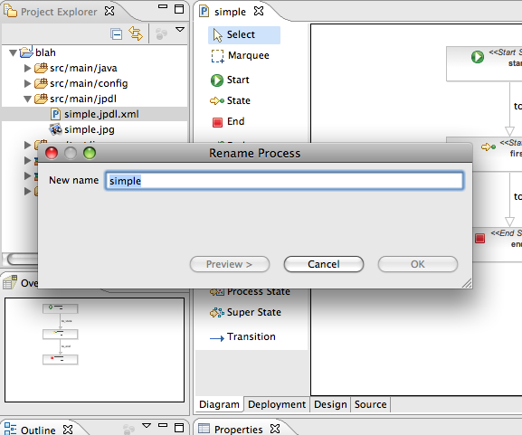
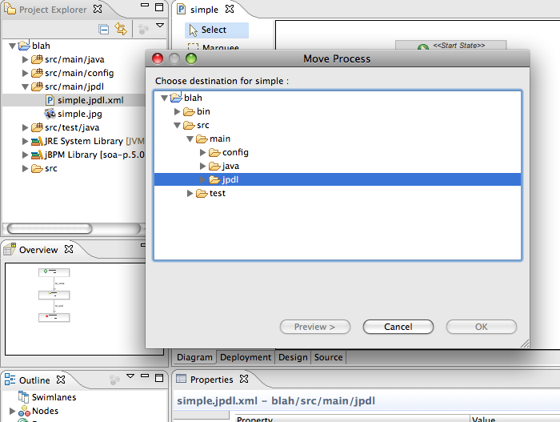
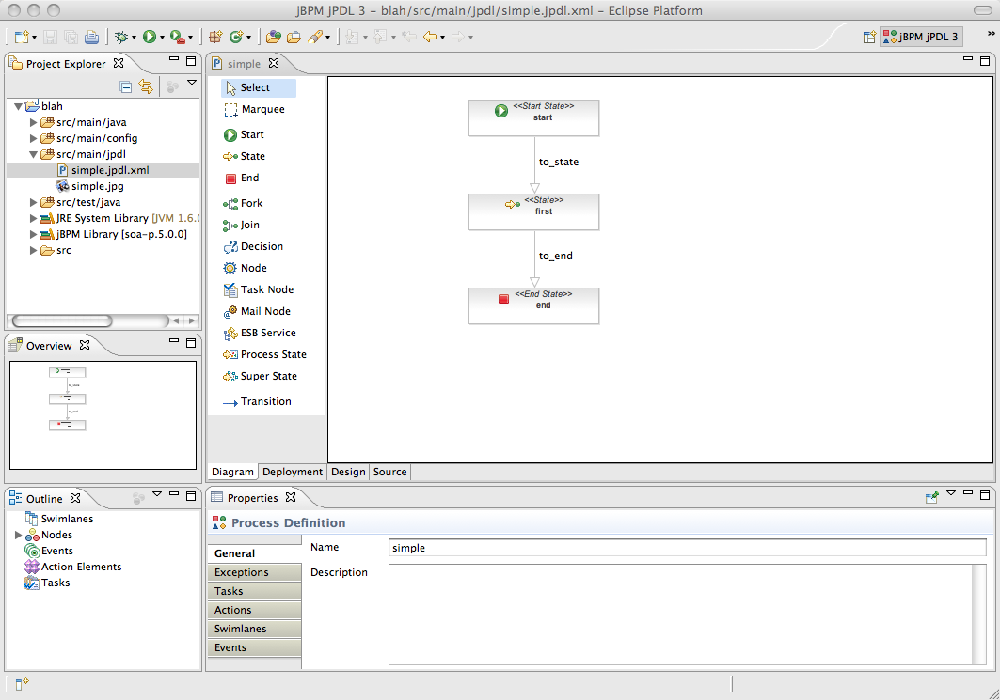
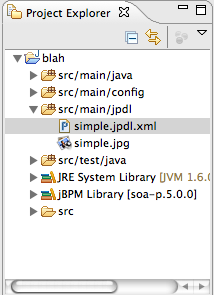

jbpm 3.x
|
| Process Rename Refactoring |
The default Resource Rename Refactoring was adapted for processes. Bringing up and completing the Rename Refactoring Wizard
in the Process Explorer View or in the Navigator View results in not only the file 'process.jpdl.xml' to be changed but also the file '.process.gpd.xml' which contains the graphical
information. In this way the implicit reference is harder to break. This is illustrated in the screenshot below.

|
| Process Move Refactoring |
Similar to the Rename Refactoring the default Resource Move Refactoring was adapted for processes. Again, not only the
file 'process.jpdl.xml' is moved to the new location when bringing up and completing the Move Refactoring Wizard in the
Process Explorer View or in the Navigator View. The file '.process.jpdl.xml' containing the graphical information will also be moved to this new location.
This is illustrated in the screenshot below.

|
| jBPM jPDL3 Perspective |
As I indicated the two aforementioned refactorings are available when they are started from the Project Explorer View or
from the Navigator view. Unfortunately they do not yet work in the Package Explorer. Because of this fact we made the
Project Explorer View the default view instead of the Package Explorer when opening the jBPM jPDL3 Perspective. This is
illustrated in the screenshot below.

|
| Process Project Layout |
There has been a minor change in the layout of new process projects. The sample process is still created in the folder
'src/main/jpdl' but not anymore in a subfolder called 'simple'. Instead the process file ('simple.jpdl.xml') the (invisible)
graphical information file ('.simple.jpdl.xml') and the image file ('simple.jpg') are now created immediately in the root of
'src/main/jpdl'. This is because multiple processes can now coexist in the same folder and it is not needed anymore to host them
in their own subfolders. This is illustrated in the image below.

|
|